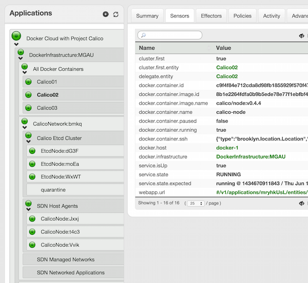
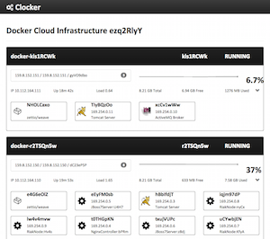

The Docker Cloud Maker
This project is maintained by @grkvlt and @andreaturli
Clocker creates and manages a Docker cloud infrastructure. Clocker supports single-click deployment and runtime management of composite applications distributed across multiple hosts. Plugins are included for both Project Calico and Weave to provide seamless Software-Defined Networking integration. Application blueprints written to run in virtual machines provisioned using Apache Brooklyn can thus be deployed to containers on your Docker Cloud infrastructure.
This repository contains the required Brooklyn entities and locations, and some example application blueprints.
To get started, you just have to download the Clocker distribution archive, deploy one of the Docker Cloud blueprints to the cloud or machines of your choice, and then use Clocker to deploy your applications. This will automatically create the required Docker containers.
You can create a Docker Cloud on your favourite cloud provider or on a private or hybrid cloud, using any of the APIs supported by Apache jclouds. Alternatively you can target one or more existing machines for running Docker, for example using Vagrant and VirtualBox.
If you are keen to peek under the covers, you will find the Docker Cloud infrastructure blueprints at either docker-cloud-weave.yaml or docker-cloud-calico.yaml depending on your choice of SDN provider. These show the components being created, including examples of placement strategies and container naming schemes.
The current version of Clocker is 1.1.0-PREVIEW.20150816.
You can deploy your own Docker Cloud with a Weave SDN by running these commands with the
<network> argument set to weave, to use Project Calico as your SDN
provider, change the argument to calico instead:
% wget --no-check-certificate --quiet \
-O brooklyn-clocker-dist.tar.gz http://git.io/v3NgU
% tar zxf brooklyn-clocker-dist.tar.gz
% cd brooklyn-clocker
% ./bin/clocker.sh <location> <network>
Where <location> can be a jclouds
supported provider such as jclouds:softlayer:lon02 for SoftLayer London,
a named location or a fixed IP like byon:(hosts="10.1.2.3").
Those simple steps will give you a running docker instance on your favourite cloud.
For anything other than a localhost or bring-your-own-nodes location, it is vital that you
first configure a ~/.brooklyn/brooklyn.properties file with cloud credentials and security
details, and create an SSH key (defaulting to ~/.ssh/id_rsa). A simple example
brooklyn.properties file would be:
# Optional user and credential setup of admin:password for accessing the Brooklyn web-console.
# To genreate the hashed password, see `brooklyn generate-password --user admin`
brooklyn.webconsole.security.provider = org.apache.brooklyn.rest.security.provider.ExplicitUsersSecurityProvider
brooklyn.webconsole.security.users = admin
brooklyn.webconsole.security.user.admin.salt = DOp5
brooklyn.webconsole.security.user.admin.sha256 = ffc241eae74cd035fdab353229d53c20943d0c1b6a0a8972a4f24769d99a6826
# Optional SSH configuration
brooklyn.ssh.config.privateKeyFile = ~/.ssh/id_rsa_clocker
brooklyn.ssh.config.publicKeyFile = ~/.ssh/id_rsa_clocker.pub
# Cloud location configurations
brooklyn.location.jclouds.softlayer.identity = user.name
brooklyn.location.jclouds.softlayer.credential = softlayersecretapikey
brooklyn.location.named.Softlayer\ California = jclouds:softlayer:sjc01
brooklyn.location.jclouds.aws-ec2.identity = ACCESS_KEY
brooklyn.location.jclouds.aws-ec2.credential = awssecretkey
brooklyn.location.named.Amazon\ Ireland = jclouds:aws-ec2:eu-west-1
For more information on setting up locations, including supplying cloud provider credentials, see the Setting Locations section of the Brooklyn user guide. For a more in-depth look, see Locations.
The Brooklyn web-console, which will be deploying and managing your Docker Cloud, can be accessed at http://localhost:8081 - this URL will have been written to standard out during startup. A read-only view of the running Docker Clouds is also available at http://localhost:8081/clocker
 Once your Docker Cloud application has started, a new location named my-docker-cloud will be
available in the Locations drop-down list when adding new applications. Simply start a new application in this location
and it will use Docker containers instead of virtual machines.
For more information on deploying applications from the Brooklyn catalog, see Launching from the Catalog in the Brooklyn user guide. You can also paste a YAML blueprint into the YAML tab of the Add Application dialog, as follows:
location: my-docker-cloud
services:
- type: brooklyn.entity.webapp.jboss.JBoss7Server
brooklyn.config:
wars.root:
- "https://s3-eu-west-1.amazonaws.com/brooklyn-clocker/hello-world.war"
A blueprint for an application using a Docker image would look like this:
location: my-docker-cloud
services:
- type: docker:redis:2.8.19
openPorts:
- 6379
directPorts:
- 6379
Build and run the examples as follows:
% git clone https://github.com/brooklyncentral/clocker.git
...
% cd clocker
% mvn clean install
...
% cd examples/target/brooklyn-clocker-dist/brooklyn-clocker
% ./bin/clocker.sh <location> <network>
...
If you just want to test the latest code, then our Travis CI build runs for every commit and the resulting distribution files are archived and made available for download on Amazon S3.
Clocker is Apache 2.0 licensed, and builds on Apache Brooklyn. Please get involved and join the
discussion on Freenode, IRC #brooklyncentral or the Apache Brooklyn
community mailing list. We also maintain a
Trello board with the current roadmap and active tasks.
Please visit the wiki for more details.
Copyright 2014-2015 by Cloudsoft Corporation Limited
Licensed under the Apache License, Version 2.0 (the "License"); you may not use this file except in compliance with the License. You may obtain a copy of the License at
http://www.apache.org/licenses/LICENSE-2.0
Unless required by applicable law or agreed to in writing, software distributed under the License is distributed on an "AS IS" BASIS, WITHOUT WARRANTIES OR CONDITIONS OF ANY KIND, either express or implied. See the License for the specific language governing permissions and limitations under the License.